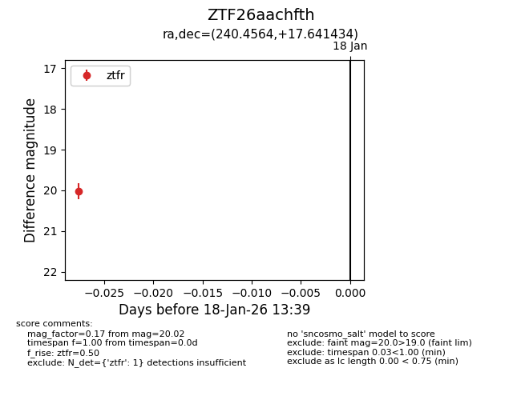
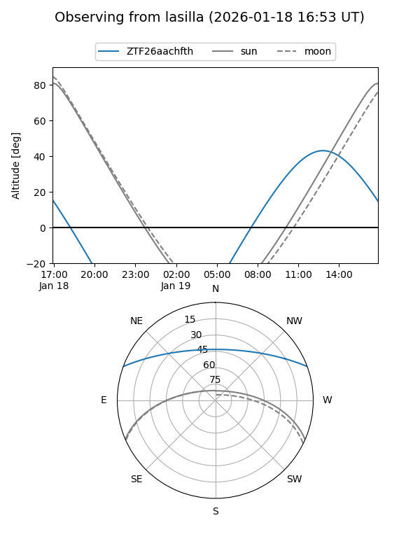

ZTF26aachfth
Target ZTF26aachfth at 2026-01-18 21:16
Aliases and brokers:
FINK: link
Lasair: link
ALeRCE: link
alt names
ZTF26aachfth (ztf,fink_ztf)
Coordinates:
equatorial (ra, dec) = 240.4564,+17.64143
equatorial (HMS+DMS) = 16:01:49.52,+17:38:29.16
galactic (l, b) = (31.0347,+45.24490)
Flags:
Photometry:
last ztfr=20.02
1 ztfr detections
Lightcurve

Visibility


Additional plots